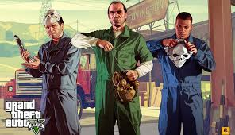
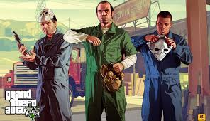

GTA V
In Grand Theft Auto V voor PC kun je de bekroonde wereld van Los Santos en Blaine County verkennen met een resolutie van 4k of hoger en met wel 60 frames per seconde.
- Open World
- Actie
- Multiplayer
- Misdaad
In Grand Theft Auto V voor PC kun je de bekroonde wereld van Los Santos en Blaine County verkennen met een resolutie van 4k of hoger en met wel 60 frames per seconde.
Rating:
Modes: Single-player, online-multiplayer
Genre: Action-adventure
Ontwikkelaar: Rockstar North
Uitgeverij: Rockstar Games
Uitgavedatum: 14 april 2015
 


Besturingsysteem: Windows 8.1 64-bits, Windows 8 64-bits, Windows 7 64-bits Service Pack 1
Processor: Intel Core 2 Quad Q6600, 2,40 GHz (4 CPUs) / AMD Phenom 9850 Quad-Core (4 CPUs), 2,5 GHz
Geheugen: 4 GB RAM
Grafische kaart: NVIDIA 9800 GT 1 GB / AMD HD 4870 1 GB (DX 10, 10.1, 11)
Direct X: Versie 10
Opslagruimte: 72 GB beschikbare ruimte
"Its a solid game, nothing special gameplay wise. Just GTA. Actually has a pretty decent storyline, but sadly still a horrible online service. Servers are slow af, people still cheat in it and generally Online is pretty slow in regards to progress. Completing heists is probably the only way to get fast and reliable money."
"Gta 5 online has become a mess.... Lots of cheaters/modders... Heist sucks.. because it's not solo.. you always need 4 or 2 players... Loading screen sucks takes too long to load. .. Not finding good matches takes a lot of time... waste of time..."
"The masterpiece everyone knows, even those who have played a single videogame in their entire lives. Fascinating criminal drama-like story, fun and diverse gameplay, active and constantly updated multiplayer/coop which adds up to the main story both as prequel and sequel. A great coming of great franchise, an absolute must-play. While still having a lot on the plate to experience in the game, waiting with multi-million community for the sixth part."